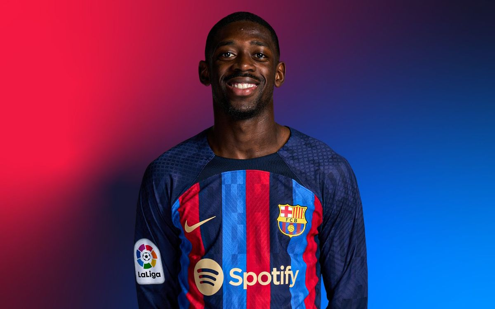
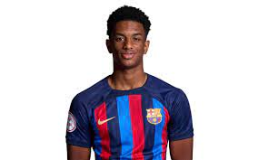

Our Coach

- Name: Xavi Hernandez
- Nationality: Spanish
- Date of Birth: January 25, 1980
Ousmane Dembele #11

- This season stats: 29 games/ 8goals & 7 assists,
- Position: Right Forward
- Nationality: French
- Date of Birth: January 1, 1997
Robert Lewandowski #9

- This season stats:32 games/25goals & 6assists
- Position: Central Forward
- Nationality: Polish
- Date of Birth: August 21, 1988
Raphinha #22

- This season stats:39 games/9goals & 9assists
- Position: Right Winger
- Nationality: Brazilian
- Date of Birth: December 14, 1996
PEDRI #22

- This season stats:32 games/ 7 goals
- Position: Central Midfielder
- Nationality: Spanish
- Date of Birth: November 25, 2002
Ansu Fati #10

- This season stats:38 games/6 goals & 3 assists
- Position: Left Winger
- Nationality: Spanish
- Date of Birth: October 31, 2002
Marc Andre Ter Stegen #1

- This season stats:36 games/21 Clean Sheets
- Position: Goalkeeper
- Nationality: German
- Date of Birth: April 30, 1992
GAVI #6

- This season stats:36 games/2 goals/5 assists
- Position: Central Midfielder
- Nationality: Spanish
- Date of Birth: August 5, 2004
Ronald Araujo #4

- This season stats:21 games/1 goal/1 assist
- Position: Central Back
- Nationality: Uruguayan
- Date of Birth: March 7, 1999
Frenkie De Jong #21
- This season stats:33 games/2 goals/1 assist
- Position: Central Midfielder
- Nationality: Dutchman
- Date of Birth: May 12, 1997
Jules Kounde #23
- This season stats:27 games/5 assists
- Position: Central Back
- Nationality: French
- Date of Birth: November 12, 1998
Alejandro Balde #28

- This season stats:32 games/5 assists
- Position: Left Back
- Nationality: Spanish
- Date of Birth: October 18, 2003